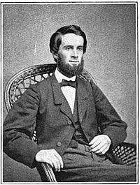

Igreja Presbiteriana Metropolitana
A Igreja Presbiteriana Metropolitana (IPM) de Porto Alegre é uma igreja federada à Igreja Presbiteriana do Brasil (IPB). Abaixo você pode ler uma breve história sobre a igreja.
O QUE É A IPB
A Igreja Presbiteriana do Brasil é uma federação de igrejas que têm em comum uma história, uma forma de governo, uma teologia, bem como um padrão de culto e de vida comunitária. Historicamente, a IPB pertence à família das igrejas reformadas ao redor do mundo, tendo surgido no Brasil em 1859, como fruto do trabalho missionário da Igreja Presbiteriana dos Estados Unidos.
DENOMINAÇÕES PRESBITERIANAS NO BRASIL
A Igreja Presbiteriana do Brasil é a mais antiga denominação reformada do país, tendo sido fundada pelo missionário Ashbel Green Simonton (1833-1867), que aqui chegou em 1859. Mais tarde, ao longo do século 20, surgiram outras igrejas congêneres que também se consideram herdeiras da tradição calvinista. São as seguintes, por ordem cronológica de organização: Igreja Presbiteriana Independente do Brasil (1903), com sede em São Paulo; Igreja Presbiteriana Conservadora (1940), com sede em São Paulo; Igreja Presbiteriana Fundamentalista (1956), com sede em Recife; Igreja Presbiteriana Renovada do Brasil (1975), com sede em Arapongas, Paraná, e Igreja Presbiteriana Unida do Brasil (1978), com sede no Rio de Janeiro.
REV. ASHBEL GREEN SIMONTON

Ashbel Green Simonton (1833-1867), o fundador da Igreja Presbiteriana do Brasil, nasceu em West Hanover, no sul da Pensilvânia, e passou a infância na fazenda da família, denominada Antigua. Eram seus pais o médico e político William Simonton e D. Martha Davis Snodgrass (1791-1862), filha de um pastor presbiteriano. Ashbel era o mais novo de nove irmãos. Os irmãos homens (William, John, James, Thomas e Ashbel) costumavam denominar-se os “quinque fratres” (cinco irmãos). Um deles, James Snodgrass Simonton, quatro anos mais velho que Ashbel, viveu por três anos no Brasil e foi professor na cidade de Vassouras, no Rio de Janeiro. Uma das quatro irmãs, Elizabeth Wiggins Simonton (1822-1879), conhecida como Lille, veio a casar-se com o Rev. Alexander Latimer Blackford, vindo com ele para o Brasil.
IMPLANTAÇÃO DA IPB (1859-1869)
O surgimento do presbiterianismo no Brasil resultou do pioneirismo e desprendimento do Rev. Ashbel Green Simonton (1833-1867). Nascido em West Hanover, na Pensilvânia, Simonton estudou no Colégio de Nova Jersey e inicialmente pensou em ser professor ou advogado. Influenciado por um reavivamento em 1855, fez a sua profissão de fé e, pouco depois, ingressou no Seminário de Princeton. Um sermão pregado por seu professor, o famoso teólogo Charles Hodge, levou-o a considerar o trabalho missionário no estrangeiro. Três anos depois, candidatou-se perante a Junta de Missões da Igreja Presbiteriana dos Estados Unidos, citando o Brasil como campo de sua preferência. Dois meses após a sua ordenação, embarcou para o Brasil, chegando ao Rio de Janeiro em 12 de agosto de 1859, aos 26 anos de idade.